Drawn from a running build of the real client (disposable prototype, design/spike/prototype.patch on main 1adf630, plus the picker from project-env-field-picker-grouped) on an isolated Paseo 0.12.0 with fake op, security and git. Left: desktop 1280 px. Right: 400 px. Rows below the variables belong to sibling tasks and are unchanged here.
Every pill state on one page: item and field, ≠, the dashed Pick a field pill, ✕ at the end of each row (400 px: name and ✕ on line one)
Press on ≠: the detail opens under its own pill and no picker opens

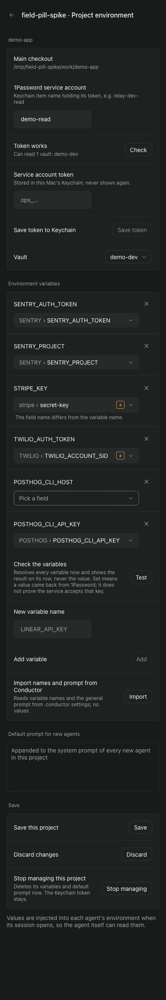
Hover on ≠ (desktop only): the same detail

First press of a pill (POSTHOG_CLI_HOST): the vault is read once and FieldPicker (project-env-field-picker-grouped's design, copied unchanged) lists it
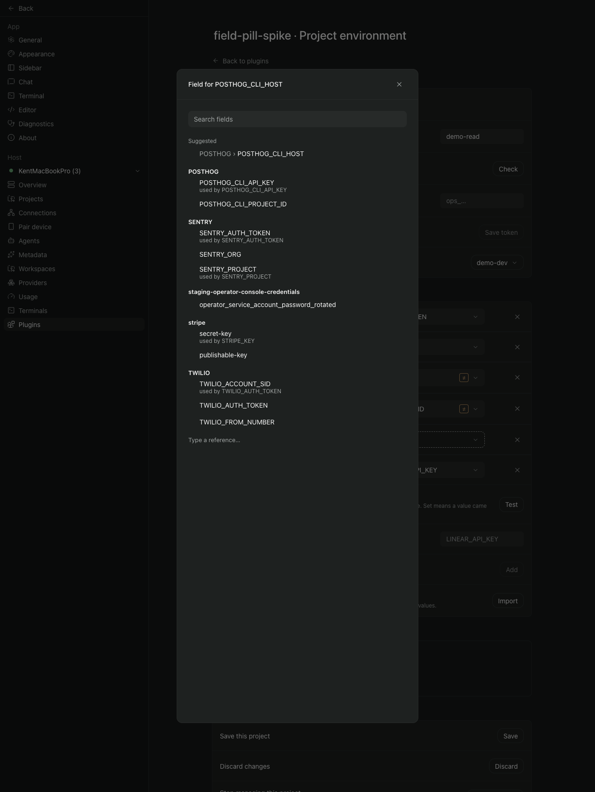
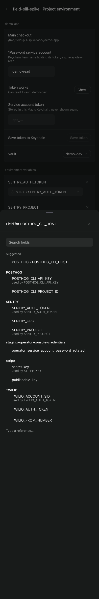
FieldPicker while the vault is being read
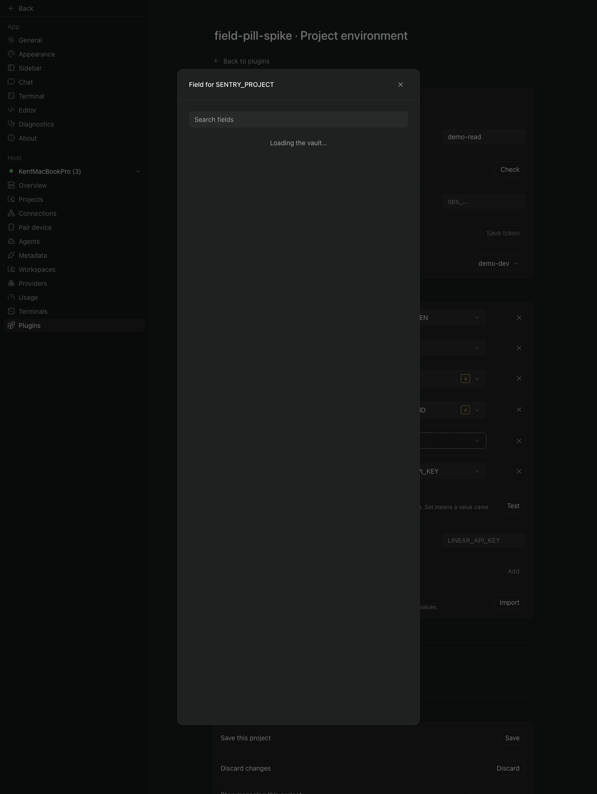
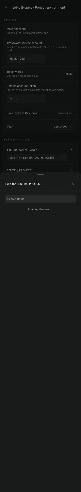
FieldPicker when reading the vault fails: this task passes the failure as its error state
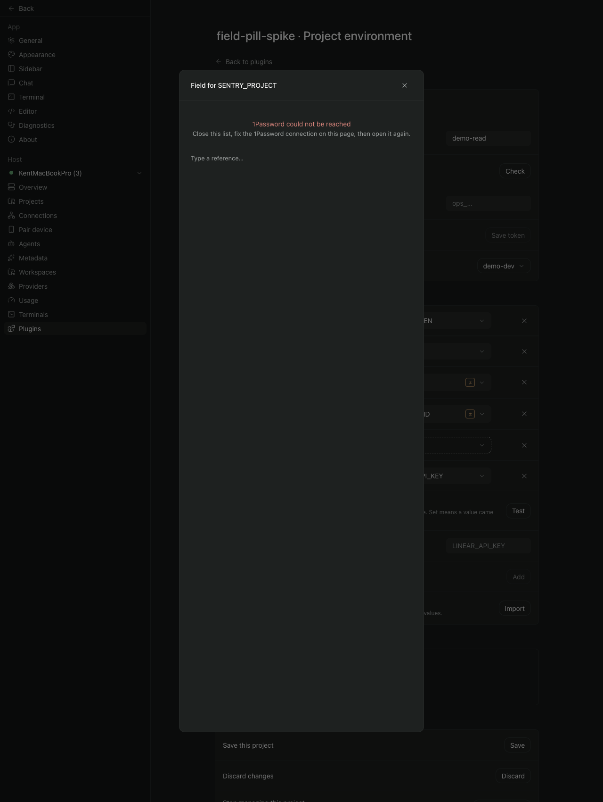
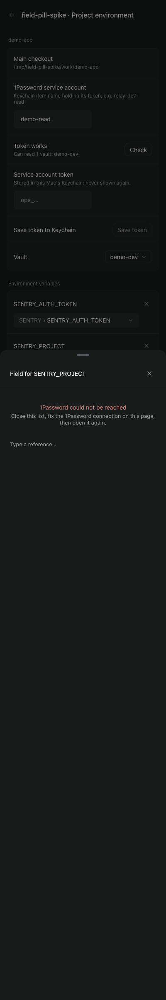
FieldPicker when no token is stored: this task passes the connection's own status text and hint
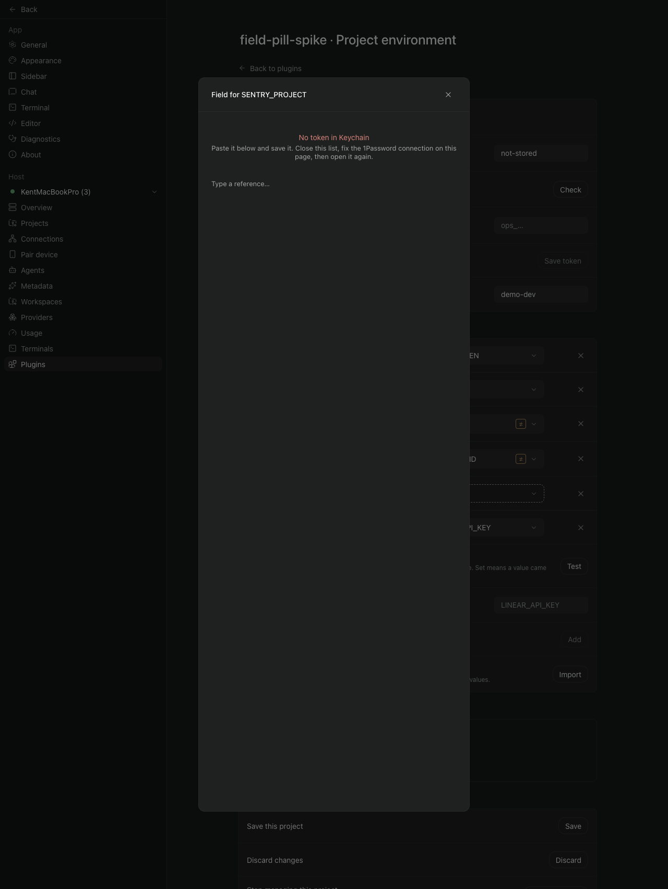
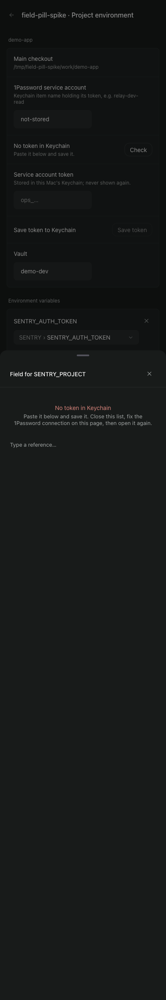
After picking POSTHOG › POSTHOG_CLI_HOST for the dashed row (no second vault read)
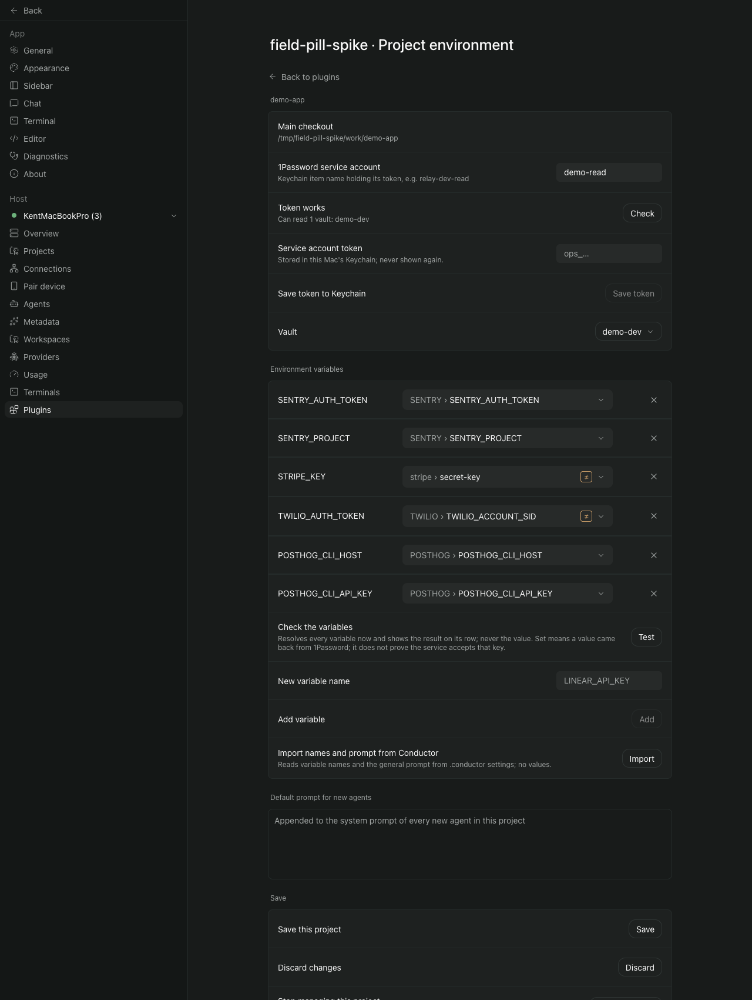
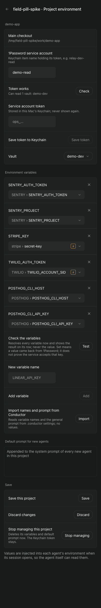
After pressing ✕ on SENTRY_AUTH_TOKEN: only that draft row is gone; nothing is saved
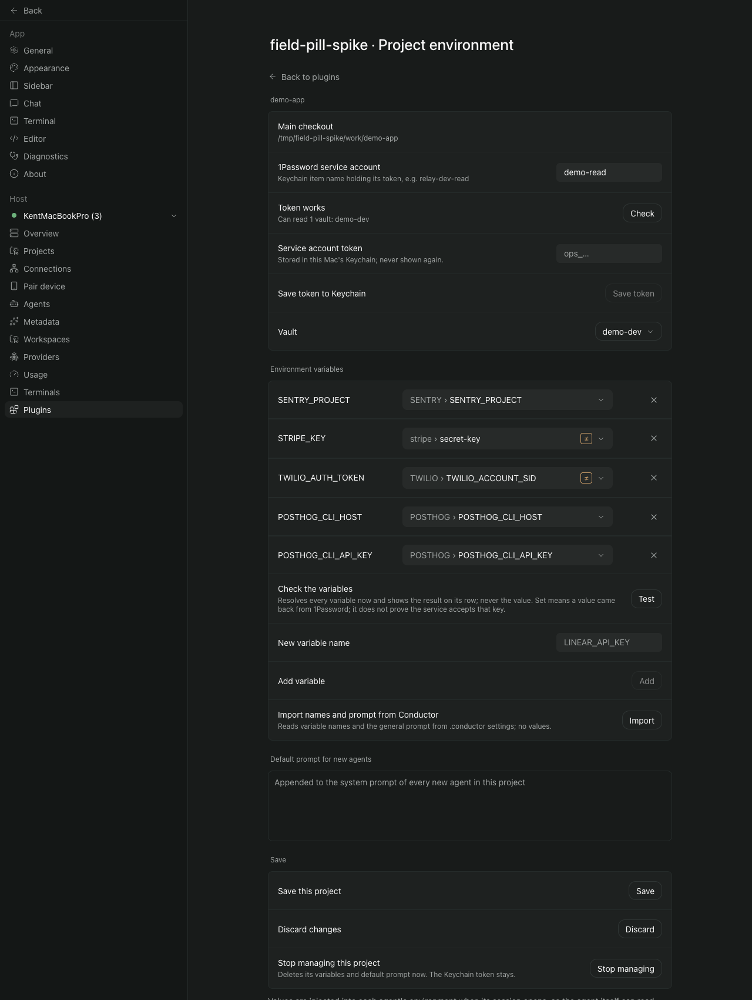
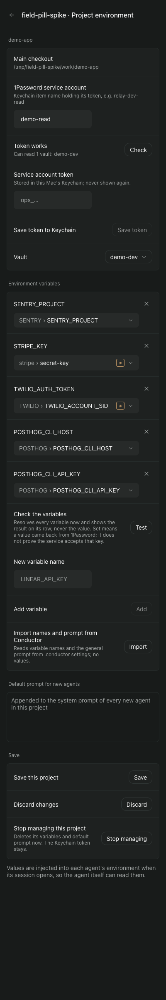
After Test with a missing field: the failed row has a red border and the 32 px slot (a stand-in dot for the sibling's (!)); the per-row line is today's and goes when test-summary-failure-mark lands
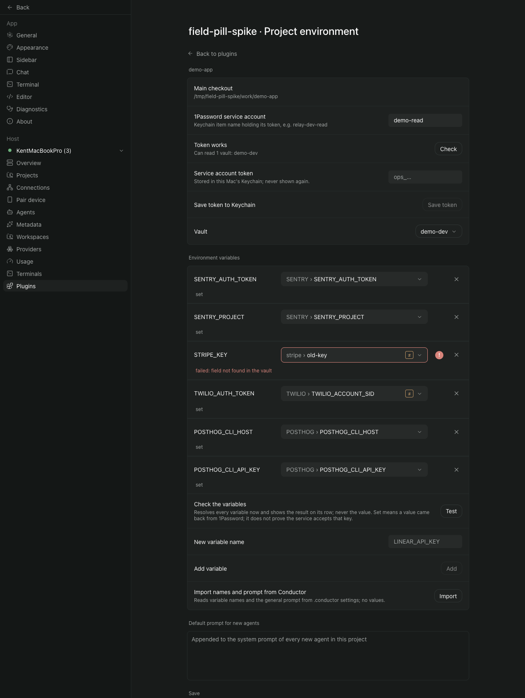
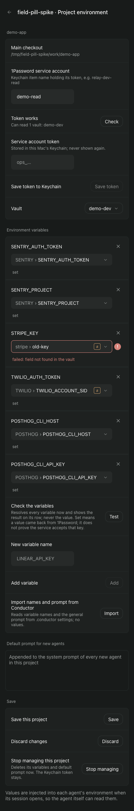
Long variable name, long item and field, a section path, another vault, a reference that is not item and field
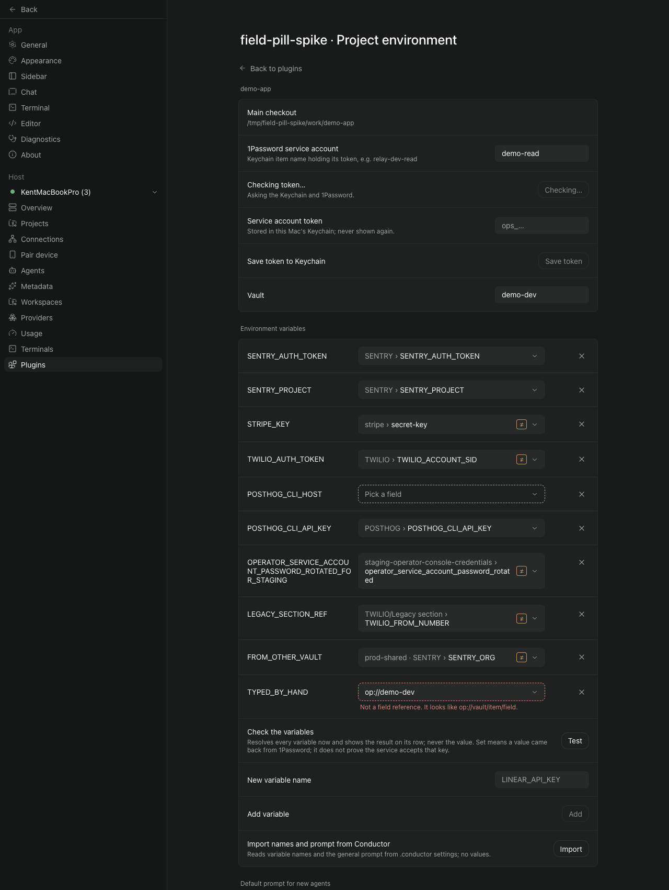

Long names with the ≠ detail open
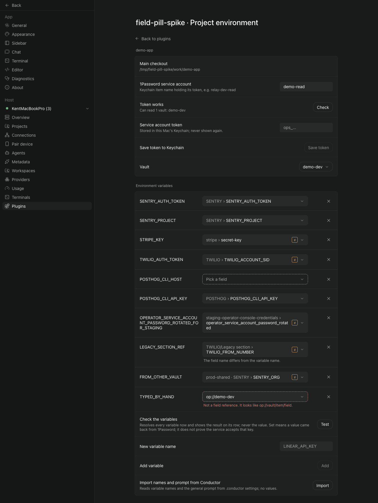
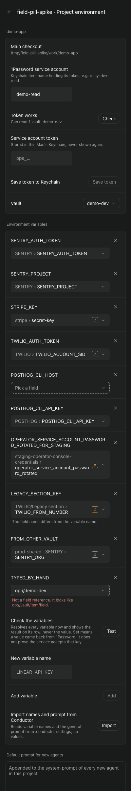